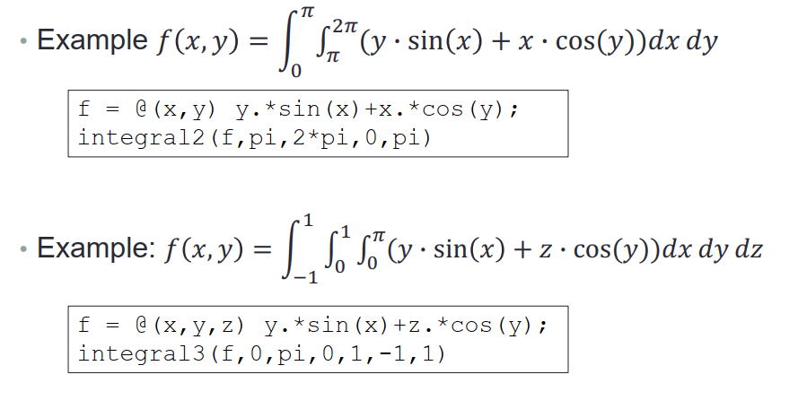

MATLAB笔记4 导数/积分/微分操作
多项式导数积分
多项式用row vector表示
f(x) = x^3 - 2x -5 表示为：p = [1 0 -2 -5];
polyval() 求多项式值
1
2
3
4
5a = [9,-5,3,7]; x = -2:0.01:5;
f = polyval(a,x);
plot(x,f,'LineWidth', 2);
xlabel('x'); ylabel('f(x)');
set(gca, 'FontSize', 14)polyder() 求导
1
2p=[5 0 -2 0 1];
polyder(p)例子
Plot the polynomial
𝑓(𝑥) = (5𝑥3 − 7𝑥2 + 5𝑥 + 10)(4𝑥2 + 12𝑥 − 3)
and its derivative for −2 ≤ 𝑥 ≤ 11
2
3
4
5
6
7
8
9a = [5,-7,5,10];
b = [4,12,-3];
c = conv(a,b); % 卷积操作/多项式相乘
x = -2:0.01:1;
f = polyval(c,x);
f1 = polyval(polyder(c),x);
plot(x,f,'b--',x,f1,'r-','LineWidth', 2);
xlabel('x'); ylabel('f(x)');
legend('f(x)','f''(x)')polyint() 多项式积分
𝑓(𝑥) = 5𝑥^4 − 2𝑥^2 + 11
2p=[5 0 -2 0 1];
polyint(p, 3) % 第二个参数是积分后多出的常数1
polyval(polyint(p, 3),7)
数值微分和数值积分
- diff()
1
2
3
4
5
6x = [1 2 5 2 1];
diff(x)
ans =
1 3 -3 -1
计算(1,5) 和 (2,7)连线斜率
1 | >> x = [1 2]; y = [5 7]; |
利用 diff() 计算微分
Given 𝑓(𝑥) = sin(𝑥), find 𝑓′(𝑥0) at 𝑥0 = 𝜋/2 using ℎ = 0.1
1 | x0 = pi/2; h = 0.1; |
利用 diff() 计算导函数
1 | h = 0.5; |
二次导数
1 | x = -2:0.005:2; y = x.^3; |
- Function Handle
把一个function作为参数传入另一个function时，需要使用function handle，即使用@符号
1 | function [y] = xy_plot(input,x) |
上面为函数xy_plot，使用如下：
1 | xy_plot(@sin,0:0.01:2*pi); |
- integral()
- 计算 ∫𝑥^3−2𝑥−5 𝑑𝑥 范围0~2的积分二重积分和三重积分
1
2y = @(x) 1./(x.^3-2*x-5);
integral(y,0,2)

- B站教程链接
台大郭彦甫matlab教程: 点击链接